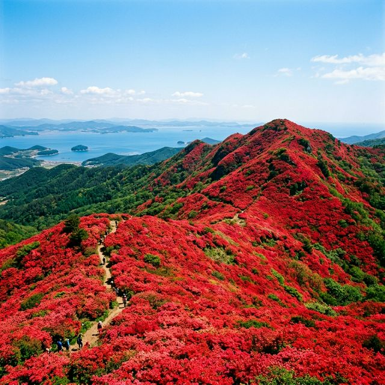
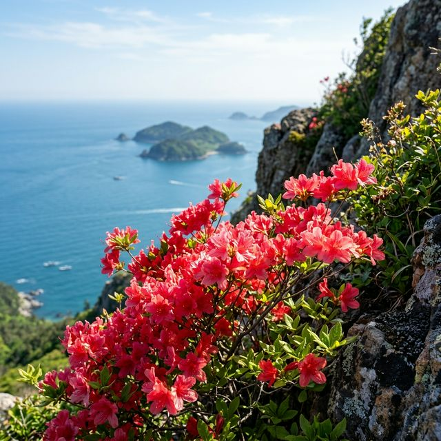
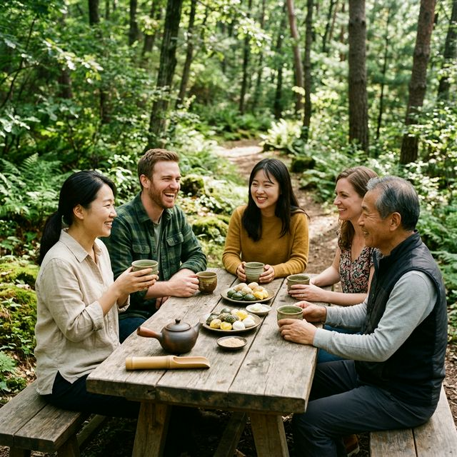

이번 제22회 일림산 철쭉문화행사는 2026년 5월 2일(토)부터 5월 4일(월)까지 3일간 진행됩니다. 주 행사장은 전남 보성군 웅치면에 위치한 일림산 일원이며, 주요
행사와 부스는 용추계곡 주차장을 중심으로 마련됩니다. 일림산은 산세가 그리 험하지 않으면서도 정상부의 조망이 탁월하여 남녀노소 누구나 즐기기 좋은 산행 코스로 손꼽힙니다.
축제 기간 중인 5월 3일 오전 11시에는 한해의 안녕과 풍요를 기원하는 산신제례가 거행되며, 이 외에도 숲 사진 전시회, 나만의 차(茶) 나무 화분 만들기 등 보성만의 특색을 살린 프로그램들이
운영됩니다. 5월 황금연휴를 맞아 가족, 연인과 함께 붉게 물든 산등성이를 걸으며 봄의 절정을 만끽해 보시길 바랍니다.
| 행사 명칭 | 제22회 보성 일림산 철쭉문화행사 |
|---|---|
| 행사 기간 | 2026. 05. 02 (토) ~ 05. 04 (월) |
| 개최 장소 | 전남 보성군 웅치면 일림산 일원 (주 행사국: 용추계곡 주차장) |
| 입장 요금 | 무료 관람 |

일림산 정상부에 펼쳐진 광활한 철쭉 군락지 전경 / AI 제작 이미지
4월 하순 현재, 일림산 철쭉은 본격적인 개화를 준비하며 꽃망울을 터뜨리기 시작했습니다. 일림산은 남해의 따뜻한 풍을 가장 먼저 받는 곳 중 하나로, 소백산이나 바래봉 등 타 지역
철쭉보다 일찍 만개하는 특징이 있습니다. 5월 초 축제 기간에는 정상부 전체가 선홍빛으로 물드는 최고의 장관을 볼 수 있을 것으로 예상됩니다.
보성군청에서는 방문객들의 편의를 위해 홈페이지를 통해 매주 2~3회 철쭉 개화 현황을 사진으로 제공하고 있습니다. 산의 고도와 방위에 따라 개화 속도가 다르므로, 실시간 정보를 미리 확인하고 방문
날짜를 정하는 것이 좋습니다. 특히 정상 부근의 억새 평원과 어우러진 철쭉은 그 색 대비가 유독 화려하여 사진 애호가들에게 큰 사랑을 받고 있습니다.
일림산의 가장 큰 매력은 정상에서 내려다보는 득량만 바다입니다. 붉은 철쭉꽃 사이로 보이는 푸른 남해 바다의 풍경은 마치 한 폭의 수채화를 보는 듯한 감동을 줍니다. 이는
지리산 바래봉이나 대구 비슬산과는 또 다른, 해안 산만이 가질 수 있는 독보적인 경관이죠. 맑은 날에는 고흥 팔영산과 장흥 천관산까지 한눈에 들어오는 탁 트인 조망을 자랑합니다.
또한, 일림산은 보성군과 장흥군의 경계에 위치하여 두 고장의 정취를 동시에 느낄 수 있습니다. 산행 중 만나는 편백나무 숲은 머릿속까지 맑게 해주는 피톤치드를 뿜어내어
등산객들에게 기분 좋은 활력을 선사합니다. 붉은 꽃길과 푸른 바다, 그리고 싱그러운 숲길까지 한 번에 즐길 수 있는 최고의 힐링 코스입니다.

철쭉꽃 사이로 내려다보이는 보성 득량만 바다의 절경 / AI 제작 이미지
일림산은 등산로가 잘 정비되어 있어 초보자나 가족 단위 방문객도 어렵지 않게 오를 수 있습니다. 가장 인기가 높은 코스는 용추계곡 주차장에서 출발하여 연못, 일림산 정상, 골치마을로
내려오는 코스입니다. 이 코스는 경사가 완만하고 산책하듯 오를 수 있어 약 2~3시간 정도면 충분히 완주가 가능합니다.
산행 중 주의할 점은 정상부의 강한 바람입니다. 고도가 그리 높지 않아도 바다와 가까워 일교차가 크고 바람이 차가울 수 있으니 얇은 바람막이나 겉옷을 반드시 준비하시길
바랍니다. 또한, 올해는 일부 급경사 구간을 데크길로 완만하게 개선하는 공사가 완료되어 더욱 안전한 산행이 가능해졌습니다. 편안한 트레킹화나 등산화를 착용하신다면 붉은 꽃길을 걷는 즐거움이 배가될
것입니다.
축제 기간 중 메인 주차장인 용추계곡 주차장은 이른 아침부터 만차가 되는 경우가 많습니다. 주말이나 공휴일에 방문하신다면 오전 8시 이전에는 도착하시는 것이 좋습니다.
만차 시에는 인근 웅치면 소재지 등에 임시 주차장을 운영하며, 축제장까지 셔틀버스를 운행할 계획이므로 안내 요원의 지시에 잘 따라주시기 바랍니다.
대중교통을 이용하실 경우 보성 시외버스터미널에서 웅치 방면 버스를 타고 용추 정류장에서 하차하시면 됩니다. 축제 기간 증차 운행 여부를 보성군 교통과나 버스 홈페이지에서 미리 확인하시는 것이
편리합니다. 산행 입구부터 정상까지 이동 시간과 대기 시간을 고려하여 넉넉한 여행 일정을 잡으시는 것을 추천드립니다.
보성 하면 빼놓을 수 없는 것이 바로 '녹차'이죠. 이번 일림산 철쭉축제에서도 보성의 명품 녹차를 체험할 수 있는 특별한 공간이 마련됩니다. 산행 후 내려오는 길에 즐기는
따뜻한 보성 녹차 한 잔은 산행의 피로를 말끔히 씻어주는 최고의 처방전이 됩니다. 전문가가 직접 우려주는 차를 시음해 보거나, 나만의 녹차 꽃 화분을 만들어보는 체험은 방문객들에게 큰 호응을 얻고
있습니다.
뿐만 아니라, 지역 주민들이 참여하는 향토 음식 장터에서는 웅치 올벼쌀로 만든 떡과 강정 등 건강한 먹거리를 맛볼 수 있습니다. 보성의 청정 자연에서 얻은 재료로 만든
간식들은 고향의 넉넉한 인심을 느끼게 해주죠. 축제장 곳곳에서 열리는 숲속 작은 음악회와 사진 인화 서비스 등 소소한 이벤트들도 축제의 즐거움을 더해줍니다.

산행 후 즐기는 보성 녹차 체험과 고즈넉한 휴식 / AI 제작 이미지
일림산에서 그리 멀지 않은 곳에 위치한 제암산 자연휴양림은 산행 후 하룻밤 머물다 가기에 최적의 장소입니다. 숲속의 집과 캠핑 시설이 잘 갖춰져 있으며, 숲 위를 걷는
듯한 '더늠길' 데크 산책로는 휠체어나 유모차도 이동이 가능할 만큼 평탄하고 아름답습니다. 일림산의 활화산 같은 붉은 꽃길과는 또 다른, 깊은 숲의 평온함을 경험할 수 있습니다.
또한, 웅치면에서 보성읍으로 이어지는 메타세쿼이아 드라이브 코스는 시원하게 뻗은 가로수들 사이로 봄바람을 맞으며 달릴 수 있는 환상적인 길입니다. 산과 바다, 그리고 숲과
차밭이 어우러진 보성의 봄은 어느 길을 선택하더라도 후회 없는 여행을 선물해 줄 것입니다.
아름다운 철쭉 군락지를 오랫동안 보존하기 위해서는 몇 가지 에티켓을 꼭 지켜야 합니다. 일림산은 전체가 산불 방지 기간에 포함되므로 화기물 소지는 엄격히 금지됩니다.
흡연은 물론 취사 행위도 절대 해서는 안 되며, 정해진 등산로 외에는 꽃을 보호하기 위해 출입하지 말아야 합니다. 꽃이 예쁘다고 꺾거나 뽑아가는 행위는 절대 금물입니다.
또한, 자신이 가져온 쓰레기는 반드시 다시 가져가는 수준 높은 등산 문화를 보여주시길 당부드립니다. 일림산 철쭉의 붉은 생명력은 우리 모두가 함께 지켜나가야 할 소중한 자연유산입니다. 다음 사람을
생각하는 배려 있는 마음이 더해질 때, 철쭉의 진정한 아름다움이 더욱 빛날 것입니다.
마지막으로 일림산 방문을 위한 준비물을 점검해 보겠습니다. 정상부는 태양을 피할 곳이 마땅치 않으므로 양산이나 모자, 선글라스는 필수입니다. 충분한 식수와
간단한 간식을 준비하시고, 산행 중 급작스러운 기상 변화에 대비한 얇은 여벌 옷도 챙기시길 바랍니다. 무릎 보호를 위해 등산 스틱을 활용하는 것도 좋은 방법입니다.
올해 2026년 철쭉 시즌은 예년보다 개화가 빠를 것으로 보이니, 5월 축제 기간 전후로 여유 있게 방문해 보시는 것도 추천드립니다. 붉게 타오르는 일림산의 철쭉처럼 여러분의 일상에도 화려하고 뜨거운
활력이 가득하시길 진심으로 응원합니다. 보성의 봄 속으로 기분 좋은 여행을 떠나보세요.